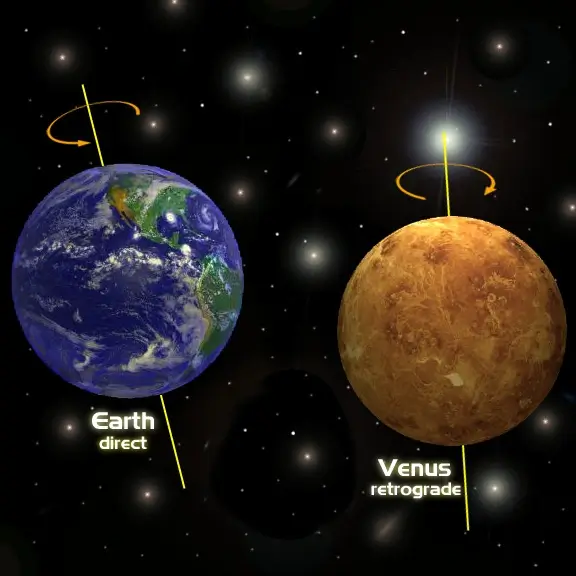
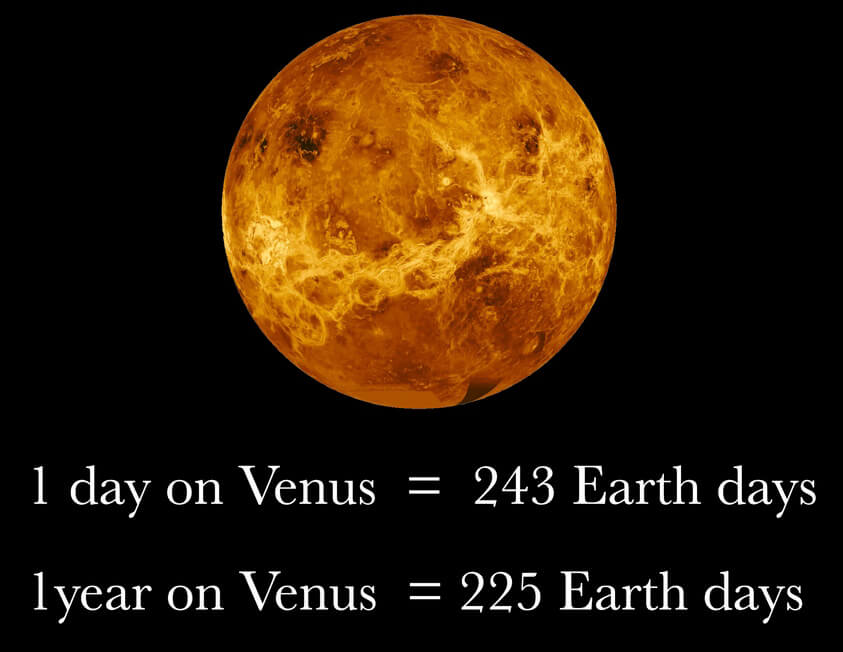

Structure
| Layer | Composition |
|---|---|
| Atmosphere | Solid silicate rock mostly basalt |
| Mantle | Solid silicate rock |
| Outer core | Liquid iron and nickel |
| Inner core | Dense solid iron and nickel |
Composition and Uncertainties
The internal structure of Venus is thought to consist of
a rocky mantle and a metallic core, similar to the
Earth's internal structure. However, there are still
some uncertainties and mysteries regarding the exact
nature of Venus's interior, as there have been very few
direct measurements taken.
It is believed that the mantle of Venus is composed
mostly of silicate rocks, and that the core is metallic,
likely consisting of iron and nickel. However, there is
some uncertainty as to the size and state of Venus's
core, as it is not known whether it is solid or
partially molten.
The surface of Venus is covered by a thick layer of
clouds composed mostly of sulfuric acid, which makes it
difficult to study the planet's interior using
traditional imaging techniques.
Backward rotation

Venus rotates on its axis backward, compared to most of the other planets in the solar system. This means that, on Venus, the Sun rises in the west and sets in the east.
Noticeable point

Venus rotates very slowly on its axis – one day on Venus lasts 243 Earth days. The planet orbits the Sun faster than Earth, however, so one year on Venus takes only about 225 Earth days, making a Venusian day longer than its year!